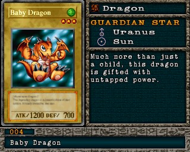

#004 · Monstro
Baby Dragon
ATK1200
DEF700
Nível3
TipoDragão
AtributoWind
Guardian StarsUrano / Sol
Senha88819587
Star Chips999.999
Quem dropa no Mod 13
| Duelista | Rank | Chance | Média | |
|---|---|---|---|---|
| S/A-TEC | 4,20% 86/2048 | 1 em 24 duelos | ||
| B/C/D | 4,20% 86/2048 | 1 em 24 duelos | ||
| S/A-POW | 3,42% 70/2048 | 1 em 29 duelos | ||
| Isis | B/C/D | 3,12% 64/2048 | 1 em 32 duelos | |
| Isis | S/A-TEC | 2,73% 56/2048 | 1 em 37 duelos | |
| High Mage Kepura | S/A-TEC | 2,73% 56/2048 | 1 em 37 duelos | |
| Nitemare | B/C/D | 2,34% 48/2048 | 1 em 43 duelos | |
| Isis | S/A-POW | 2,15% 44/2048 | 1 em 47 duelos | |
| High Mage Kepura | B/C/D | 1,95% 40/2048 | 1 em 51 duelos | |
| Pegasus | S/A-POW | 1,66% 34/2048 | 1 em 60 duelos | |
| Pegasus | S/A-TEC | 1,56% 32/2048 | 1 em 64 duelos | |
| Nitemare | S/A-POW | 1,46% 30/2048 | 1 em 68 duelos | |
| Nitemare | S/A-TEC | 1,46% 30/2048 | 1 em 68 duelos | |
| DarkNite | B/C/D | 1,27% 26/2048 | 1 em 79 duelos | |
| 2ndJono 2nd | B/C/D | 1,12% 23/2048 | 1 em 89 duelos | |
| 2ndJono 2nd | S/A-POW | 1,07% 22/2048 | 1 em 93 duelos | |
| DarkNite | S/A-POW | 1,07% 22/2048 | 1 em 93 duelos | |
| DarkNite | S/A-TEC | 1,07% 22/2048 | 1 em 93 duelos | |
| 1stJono 1st | S/A-POW | 0,98% 20/2048 | 1 em 102 duelos | |
| Villager 3 | B/C/D | 0,88% 18/2048 | 1 em 114 duelos | |
| 2ndJono 2nd | S/A-TEC | 0,88% 18/2048 | 1 em 114 duelos | |
| Duel Master K | B/C/D | 0,88% 18/2048 | 1 em 114 duelos | |
| Villager 3 | S/A-TEC | 0,73% 15/2048 | 1 em 137 duelos | |
| High Mage Kepura | S/A-POW | 0,73% 15/2048 | 1 em 137 duelos | |
| Duel Master K | S/A-TEC | 0,73% 15/2048 | 1 em 137 duelos | |
| Villager 3 | S/A-POW | 0,68% 14/2048 | 1 em 146 duelos | |
| Duel Master K | S/A-POW | 0,68% 14/2048 | 1 em 146 duelos | |
| S/A-POW | 0,59% 12/2048 | 1 em 171 duelos | ||
| S/A-TEC | 0,59% 12/2048 | 1 em 171 duelos | ||
| B/C/D | 0,59% 12/2048 | 1 em 171 duelos |
Quem dropa no jogo original
| Duelista | Rank | Chance | Média | |
|---|---|---|---|---|
| S/A-TEC | 4,20% 86/2048 | 1 em 24 duelos | ||
| B/C/D | 4,20% 86/2048 | 1 em 24 duelos | ||
| S/A-POW | 3,42% 70/2048 | 1 em 29 duelos | ||
| Isis | B/C/D | 3,12% 64/2048 | 1 em 32 duelos | |
| Isis | S/A-TEC | 2,73% 56/2048 | 1 em 37 duelos | |
| High Mage Kepura | S/A-TEC | 2,73% 56/2048 | 1 em 37 duelos | |
| Nitemare | B/C/D | 2,34% 48/2048 | 1 em 43 duelos | |
| Isis | S/A-POW | 2,15% 44/2048 | 1 em 47 duelos | |
| Pegasus | B/C/D | 1,95% 40/2048 | 1 em 51 duelos | |
| High Mage Kepura | B/C/D | 1,95% 40/2048 | 1 em 51 duelos | |
| Pegasus | S/A-POW | 1,66% 34/2048 | 1 em 60 duelos | |
| Pegasus | S/A-TEC | 1,56% 32/2048 | 1 em 64 duelos | |
| High Mage Kepura | S/A-POW | 1,46% 30/2048 | 1 em 68 duelos | |
| Nitemare | S/A-POW | 1,46% 30/2048 | 1 em 68 duelos | |
| Nitemare | S/A-TEC | 1,46% 30/2048 | 1 em 68 duelos | |
| DarkNite | B/C/D | 1,27% 26/2048 | 1 em 79 duelos | |
| 2ndJono 2nd | B/C/D | 1,12% 23/2048 | 1 em 89 duelos | |
| 2ndJono 2nd | S/A-POW | 1,07% 22/2048 | 1 em 93 duelos | |
| DarkNite | S/A-POW | 1,07% 22/2048 | 1 em 93 duelos | |
| DarkNite | S/A-TEC | 1,07% 22/2048 | 1 em 93 duelos | |
| 1stJono 1st | S/A-POW | 0,98% 20/2048 | 1 em 102 duelos | |
| Villager 3 | B/C/D | 0,88% 18/2048 | 1 em 114 duelos | |
| 2ndJono 2nd | S/A-TEC | 0,88% 18/2048 | 1 em 114 duelos | |
| Duel Master K | B/C/D | 0,88% 18/2048 | 1 em 114 duelos | |
| Villager 3 | S/A-TEC | 0,73% 15/2048 | 1 em 137 duelos | |
| Duel Master K | S/A-TEC | 0,73% 15/2048 | 1 em 137 duelos | |
| Villager 3 | S/A-POW | 0,68% 14/2048 | 1 em 146 duelos | |
| Duel Master K | S/A-POW | 0,68% 14/2048 | 1 em 146 duelos | |
| S/A-POW | 0,59% 12/2048 | 1 em 171 duelos | ||
| S/A-TEC | 0,59% 12/2048 | 1 em 171 duelos | ||
| B/C/D | 0,59% 12/2048 | 1 em 171 duelos |
A chance vale por duelo vencido com o rank indicado. "1 em N" é a média de duelos para conseguir a carta. S/A-POW = vitória por força; S/A-TEC = vitória técnica; B/C/D = ranks baixos.